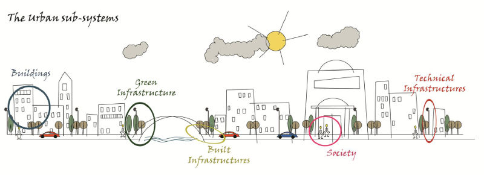
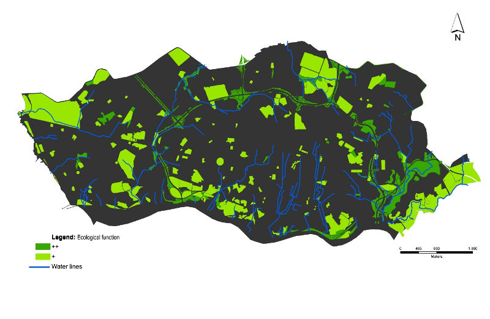

La contaminación del aire en ciudades y zonas metropolitanas ha cobrado gran importancia y trascendencia por los riesgos que representa a la salud de sus habitantes y por tanto en el desarrollo sustentable de las áreas implicadas. La cubierta vegetal, el parque vehicular, las emisiones industriales, las fuentes de contaminantes orgánicos, los efectos climáticos, la temperatura, los vientos, la tecnología, la densidad de población y la construcción, son algunas variables que forman parte de la función multifactorial de la contaminación atmosférica. Por ser de naturaleza compleja, dependiente de múltiples factores, la contaminación del aire aún no ha sido atendida de manera holística, bajo los distintos enfoques ecosistémicos e interdisciplinarios que analicen desde las diversas áreas del conocimiento, las causas, los mecanismos y los efectos; para conseguir atenuar la creciente presencia de agentes contaminantes y sus graves consecuencias.
A cada disciplina que tiene interés por el desarrollo sustentable, le corresponde aportar elementos de análisis y de solución que puedan articularse en proyectos integrados, encaminados a resolver en la medida de lo posible las causas de la contaminación del aire y aminorar los efectos nocivos. Así pues, les compete a organismos relacionados con el desarrollo, planeación y ordenamiento territorial y urbano proponer alternativas prácticas y efectivas y de acuerdo al contexto del lugar. En este sentido, se propone la implementación de una Estructura Ecológica como estrategia para mejorar la salud, bienestar social y calidad de vida de los laguneros, entre otros beneficios.
Según las Directrices sobre Calidad del Aire del 2005 de la Organización Mundial de la Salud (OMS) “Los contaminantes atmosféricos, aunque tengan concentraciones bajas, se relacionan con efectos adversos para la salud. (…)Es posible establecer una relación cuantitativa entre los niveles de contaminación y resultados concretos relativos a la salud como el aumento de la mortalidad o la morbilidad.”
De acuerdo a los especialistas, la Comarca Lagunera es un foco rojo en México por el elevado número de casos de asma, rinitis, y dermatitis atópicas, entre otras alergias y enfermedades provocadas por el polvo, el polen, el calor, y la emisión de metales pesados como plomo, dióxido de azufre y óxidos de nitrógeno. En 2008, la Jurisdicción Sanitaria VI que abarca los municipios de Torreón, Matamoros y Viesca, registró 3,469 casos de asma, 2,072 de neumonías y bronconeumonías y 133,736 de infecciones respiratorias agudas. Mientras que en la Laguna de Durango se registraron 40,411 casos de enfermedades respiratorias (El Siglo de Torreón, 2008).
La OMS considera el asma como una enfermedad prioritaria, ya que los gastos directos e indirectos destinados a salud pública que implica son grandes. Además la tendencia de la prevalencia y la susceptibilidad a enfermedades respiratorias va en aumento. En general no solamente hay mayor incidencia sino que la severidad de los casos también está incrementando (GINA, 2004).En Torreón uno de cada diez niños, padece asma o algún tipo de alergia, pero sólo uno de cada 20 es diagnosticado, y cuatro de cada diez han tenido alguna vez síntomas de esta enfermedad (El Siglo de Torreón, 2008).
En la ZML el clima seco favorece la presencia de tolvaneras, con las cuales se levanta la contaminación y se disemina por el medio ambiente, lo cual provoca un aumento notable en las incidencias y complicaciones de enfermedades relacionadas. Por otra parte las alteraciones en el clima, producidas por el calentamiento global, también empiezan a generar cambios en el comportamiento de las enfermedades de la población de la región.
Recientemente estudios integrados refieren el rol de la vegetación urbana en la formación y degradación de contaminantes ambientales en las ciudades (Nowak et al., 2006). Un estudio en Nueva York concluye que el arbolado de las calles está asociado con una menor prevalencia de asma en la niñez temprana (ForestryCommission, 2012; Lovasi et al., 2008).También existen fuertes evidencias de que las azoteas verdes contribuyen a reducir la contaminación atmosférica (Rowe, 2011; Speak et al., 2012). En especial Speak, et al., (2012), las presenta como “filtros pasivos de partículas contaminantes” demostrando una reducción de 0.24 t por año de PM10(1) con los resultados de un estudio en el centro de Manchester.
Por lo anterior, es claro que en la Zona Metropolitana de la Laguna es absolutamente necesario pasar a otro nivel de intervención, en el cual la normativa ambiental constituya la base de una política en la que la sustentabilidad ecológica sea asumida territorialmente por una estructura con identidad propia, que se asigne por las características incuestionables de las áreas que la constituyen: La Estructura Ecológica(2).Este concepto engloba todo el espacio revestido por vegetación y funge como un sistema de ordenación, tanto de otras áreas verdes urbanas, como de actividades humanas, además de que orienta a una planeación integrada del territorio.

SUBSISTEMAS URBANOS. Fuente: Adaptado de http://zaloamati.azc.uam.mx/handle/11191/565
Los sistemas urbanos son sistemas complejos con una estructura, función y dinámica propia, formados por los recursos naturales y construidos, creados por y para la especie humana. Estructuralmente, las ciudades se componen de subsistemas que están interconectados y forman una unidad del paisaje urbano. La interacción entre los componentes, la dinámica y el funcionamiento de estos subsistemas son los responsables de la identidad de una ciudad, por lo que su planificación y gestión deberá llevarse a cabo de acuerdo con una teoría multidisciplinaria, que reúne a todos los componentes, valores y oportunidades de una zona urbana.
Manejar el tema de protección a la salud como punto estratégico en materia de ordenamiento territorial y urbano representa una oportunidad para el desarrollo de la región. El desafío, en este caso es generar políticas, estrategias e instrumentos de gestión para la creación, ordenamiento y potencialización de áreas verdes urbanas en red, definiendo criterios para la sustentabilidad ecológica del territorio. La Estructura Ecológica es un instrumento de gestión territorial que se ha implementado en varios casos exitosos en Europa. En Portugal, los municipios han identificado este sistema, en su Plan Maestro Municipal desde 1999 sobresaliendo algunos como: la Estructura Ecológica del Área Metropolitana de Lisboa y Plano Regional de Ordenamiento del Territorio de Alentejo Litoral (con la designación de Estructura de Protección y Valorización del Paisaje).

ESTRUCTURA ECOLÓGICA URBANA DE OPORTO, PORTUGAL. Fuente:Adaptado de http://zaloamati.azc.uam.mx/handle/11191/565
"Plantar árboles no es la única solución pero es parte de la solución para la crisis climática"
Al Gore, 2007
Notas:
- Las PM10 o partículas gruesas, consisten en partículas menores a 10µm, en ellas se incluyen las formas más visibles de la materia particulada, tales como humo negro, tierra, polvo de las carreteras y obras de construcción, grandes partículas de sal procedentes de la espuma del mar, mohos, polen, esporas y otras partes de plantas, entre otras.
- El Decreto Reglamentar n. 9/2009 del Ministerio del Ambiente de Ordenamiento del Territorio y Desarrollo Regional de Portugal establece el concepto de Estructura Ecológica Municipal como el conjunto de áreas del suelo que, en virtud de sus características biofísicas o culturales, de su continuidad ecológica y de su ordenamiento, tienen por función principal contribuir al equilibrio ecológico para la protección, conservación y valorización ambiental, paisajística y de patrimonio natural de los espacios rurales y urbanos.
Referencias:
- Quintas, A., Curado M.J., (2011). La estructura ecológica urbana como promotor de la calidad de vida: caso de Porto, Portugal. Fecha de consulta: enero 2015. Disponible en: http://zaloamati.azc.uam.mx/handle/11191/565
- El Siglo de Torreón (2008). El precio de vivir en La Laguna. Torreón, Coahuila. Fecha de consulta: enero 2015. Disponible en: http://www.elsiglodetorreon.com.mx/movil/?n=425761
- Espinosa, M. (2012). Política y contaminación. Periódico Excélsior, S.A. de C.V.
- Forestry Commission. (2012). Benefits of green infraestructure evidence note Great Britain.
- GINA. (2004). Global Burden of Asthma. New Zeland & United Kingdom.
- Lovasi, G. S., Quinn, J. W., Neckerman, K. M., Perzanowski, M. S., & Rundle, A. (2008). Children living in areas with more street trees have lower prevalence of asthma. J Epidemiol Community Health, 62(7), 647-649.
- Madureira, H. (2008). A Infra-estrutura Verde da Bacia do Leça - Uma Estratégia para o Desenvolvimento Sustentável na Região Metropolitana do Porto. Faculdade de Ciências Universidade do Porto, Porto, Portugal.
- Magalhaes, M (2003). A Estrutura Ecológica Metropolitana de Lisboa. Portugal. Fecha de consulta: enero 2015. Disponible en: http://www.isa.utl.pt/ceap/index_files/A_ESTRUTURA_ECOLOGICA_METROPOLITANA_DE_LISBOA.pdf
- Nowak, D. J., Crane, D. E., & Stevens, J. C. (2006). Air pollution removal by urban trees and shrubs in the United States. Urban Forestry & Urban Greening, 4(3-4), 115-123.
- OMS. (2011). Calidad del aire y salud. [Nota descriptiva]. Centro de prensa, N°313.
- Rowe, D. B. (2011). Green roofs as means of pollution abatment. Environmental Pollution, 159, 210-2110.
- Speak, A. F., Rothwell, J. J., Lindley, S. J., & Smith, C. L. (2012). Urban partiiculate pollution reduction by four species of green roof vegetation in a UK city. Atmospheric Environment, 61, 283-293.